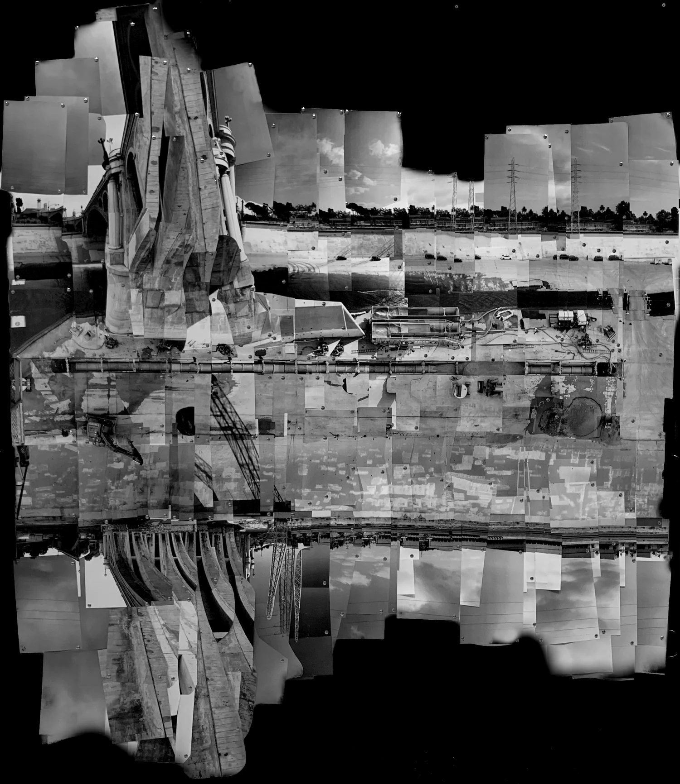
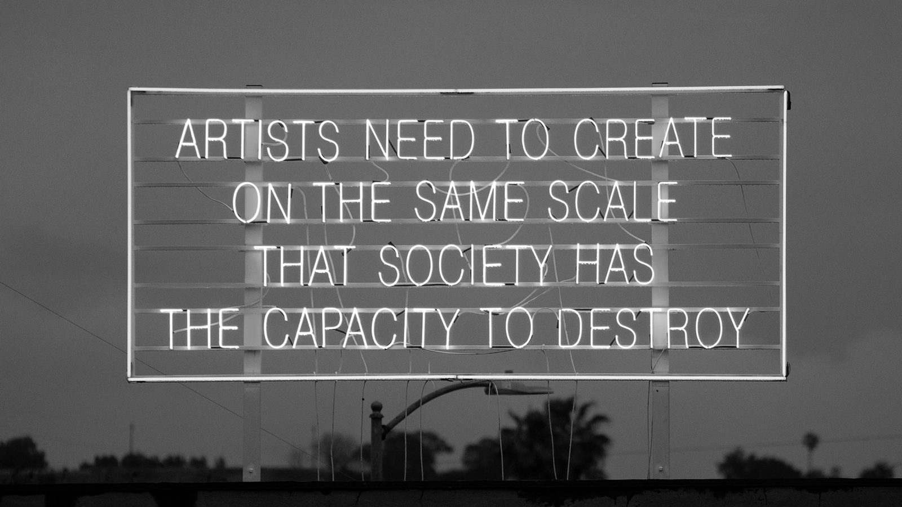
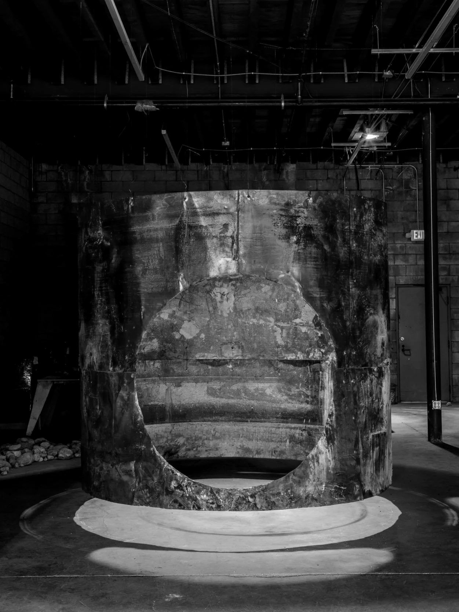
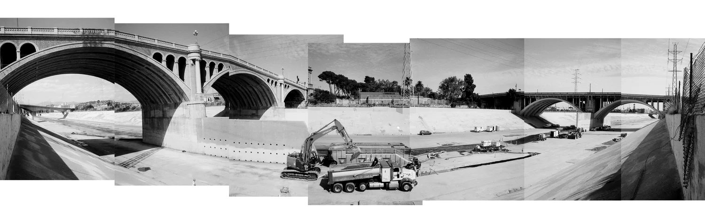

a music video for piper maru, shot entirely at metabolic studio on the los angeles river. the full newspeech setup, but no band. the story of the place told in supers — the cards above are the film.
piper marumetabolic studio's work imagines the river after us, the land repaired in advance of our leaving. we will film a music video without a band, the equipment remains but no people ever arrive. the machines on screen have performed the song, and could do so without us. music that continues in our absence, on the site of land being repaired for a time after us.
instrumental music is inherently difficult to classify, it's hard to have a point of view without lyrics. not appearing in the video says more than whatever performative acting we could do. there's a lot of discussion about the human role in, well basically everything moving forward and it's easy to get caught up in that discourse. one of the things that most compelled me about the metabolic studio's story is the scale and timeline — this isn't about today or tomorrow, it's the proving ground for work to be completed 100 years from now.
we would be honored to lend our music to this cause today to do our part to secure as many tomorrows as possible.

no narration, no interviews. the history of the site and the studio arrives as white monospaced supers — some keyed in post, some displayed on the crt itself and rephotographed, so the television becomes the narrator. the last card is metabolic's own motto.

an ntsc crt sits inside the scene — on a road case, at the wetland edge, among clay pipe — playing a cut of period footage: the 1913 aqueduct opening, the 1938 floods, lorentz's the river, dust-bowl plows, forests being born. the screen is rephotographed at 1/60s through the eurorack video mangler, so history arrives already degraded. macro passes on the phosphor for inserts.
the other clock. water moving in the wetland cells, plants weaving in wind, seed heads, insects, wet concrete, sediment, the river through the fence. shot slow and close, cut against the crt's engineered rhythm.

locked-off wides, long holds. the full newspeech rig setup staged amidst the warehouse brick and the post-industrial yard: the full band setup ready for action. nothing is touched on camera.
| zone | where | coverage |
|---|---|---|
| a | warehouse exterior / yard | tableau wides of the full rig against brick and salvage; slow push-ins; detail passes on powered gear — vu meters, tape motion, stepping leds. |
| b | wetland edge + stilling well | crt placed in landscape playing the archival cut; rephotography passes at escalating mangle; water-surface and pump-infrastructure macro. |
| c | plantings + materials | macro: native plants in wind, seed heads, clay pipe, charred wood, sediment against concrete, solar array details. |
| d | river fence line | the concrete channel through chain-link; trains passing behind; the one place engineered and living systems share a frame naturally. |
full playback passes on the crt with audio audible for waveform re-sync.

the crt's material is already secured: fourteen public-domain films. pulled from the prelinger archives and government collections. the 1913 aqueduct opening. the 1938 floods. pare lorentz's the river and the plow that broke the plains. soil-conservation and reforestation films. northern california home movies. bunker hill before demolition. the archival cut runs the same arc the supers narrate.
| access | the yard, wetland edge, and warehouse exterior for one shoot day, plus a half-day scout ahead of it. |
| a walk-through | someone from the studio — partly logistics, partly fact-checking the super cards against the project's own language. |
| close photography | permission to shoot site materials and infrastructure macro. nothing is moved, planted areas are never entered, all power is battery/inverter unless offered. |
in return: the studio's story carried verbatim through a finished piece, a filmed at metabolic studio credit, review of the super copy before picture lock, and the video free for the studio's own use.
| crew | two — camera + rig wrangling. nobody appears on screen. |
| day | one full day: rig staging in the morning, crt playback passes midday, macro and site work into golden hour, tableau wides last. |
| footprint | a van's worth of equipment, everything removed same day. leave-no-trace. |
| power | battery + inverter for crt, amps, and rig; no draw on site systems unless offered. |
| audio | track played back on set for crt sync passes; final audio is the studio master, machines on screen running the same sequence. |
| post | cut on the existing 112 bpm marker grid; mono lut + grain pipeline already built; supers keyed in post or shot on the crt. |
| cover | certificate of insurance to whatever metabolic requires; happy to sign site agreements. |